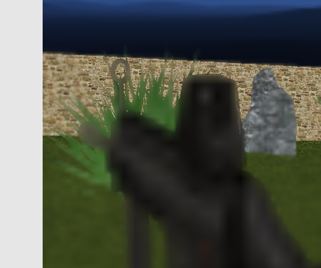
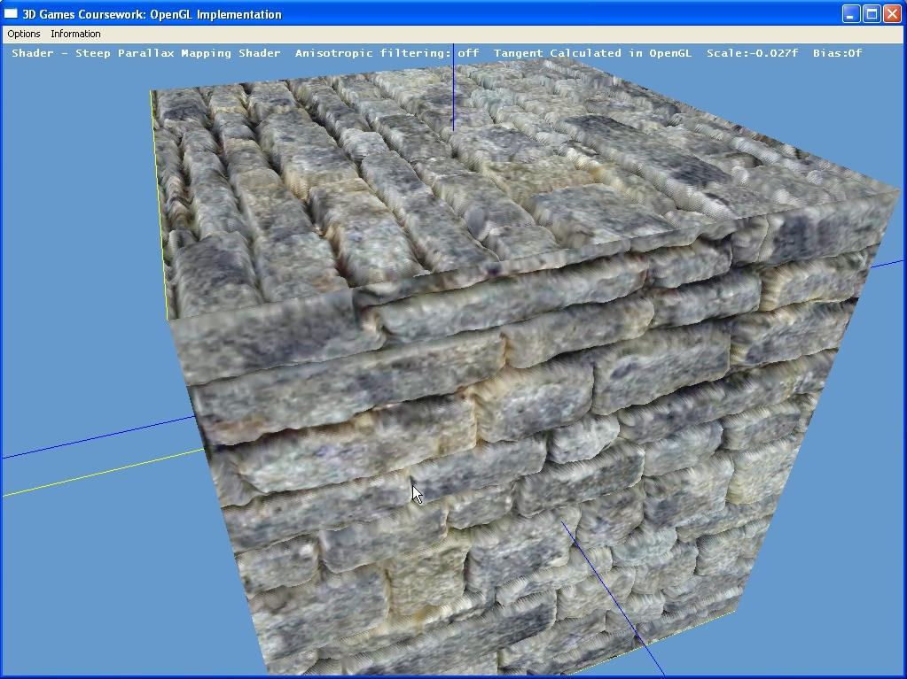

Course Projects
Click the title of project to see more detailsReal-Time Depth-of-Field with Partial Occlusion
|  |
Language/IDE: C++ OpenGL 4 / Visual Studio 2010 Project Duration: November 2011-January 2013 I completed a research project for my part-time masters degree to simulate accurate depth-of-field at real time framerates with partial occlusion. This was implemented using OpenGL 4.0 and GLSL. Current techniques are not accurate enough for good transition from CGI used in the film industry, which renders depth-of-field effects from ray tracing simulation. The new technique I developed demonstrated promising results in counteracting some of the drawbacks of other real time techniques such as intensity leakage and no support for partial occlusion. |
Shader Coursework
|  |
Language/IDE:C++ OpenGL / Visual Studio 2005
Project Duration: Feb 2008-July 2008 (Outside work) I developed this project as part of my course covering advanced games algorithms. This included shader programming as well as numerical simulation theory and 3D graphics (not API specific). The application allows you to edit shaders and see the result in real time. It demonstrates parallax mapping and bump mapping, allowing you to tweak various parameters. The project doesn't include occlusion effects, however this addition can be seen in my castle demo. Other than that I have found this to be a useful tool for testing various shader effects before testing them in a game environment. Source code is not available due to the fact it was submitted as part of coursework. |
<< Back